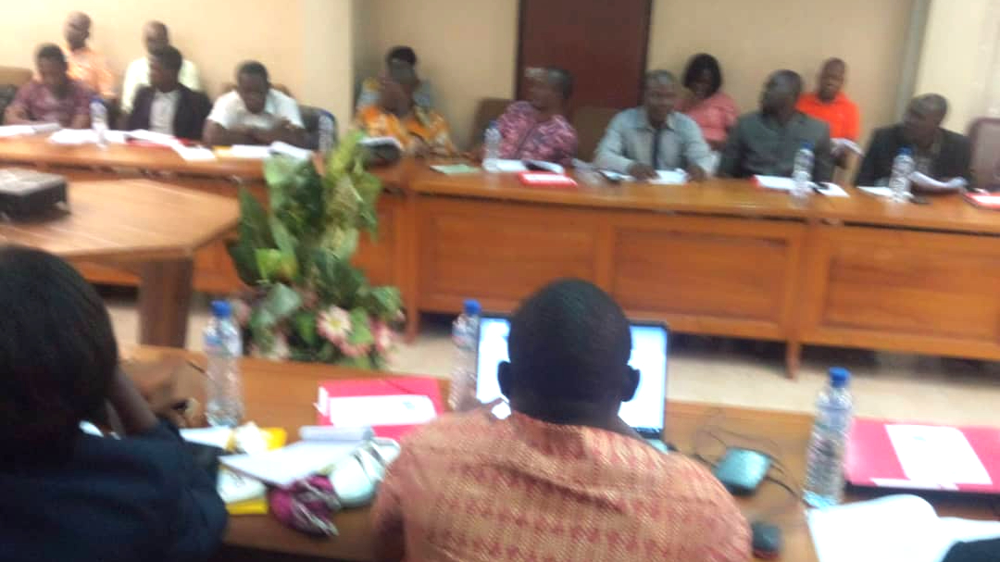

Stratégie

Plan d’activités annuel de l’ONG: ADET
- La mission de l’ONG: ADET est le développement social, le développement économique et le développement environnemental, la promotion du genre, des droits de l’homme et l’innovation
technologique
- La mobilisation de ressources internes et externes
- La location ou la construction d’un bureau approprié,
équipé et adapté à l’engagement de notre organisation à l’échelle mondiale, régionale, sous -régional,
nationale, sous- nationale et locale
- Les recrutements du personnel qualifié
- Les formations multisectorielles:
- Éducation,
- Renforcer le capital humain
- Santé et
- Renforcer la protection sociale et l’inclusion économique des pauvres et des vulnérables․
(BM & BAD & gouvernement togolais & BOAD et autres institutions)
- Promouvoir les énergies renouvelables, l’agro-business, les coopératives agricoles, l’eau et
l’assainissement pour créer d’emplois (BM & BAD & Gouvernement togolais & BOAD & autres institutions)
- Promouvoir la digitalisation, la révolution des données, la lutte contre la pauvreté,
renforcer la protection sociale et l’inclusion économique des pauvres et des groupes vulnérables
pour ne laisser personne de coté․ création d’emplois (BM & BAD & Gouvernement togolais & BOAD & d’autres partenaires)
- Promouvoir les infrastructures résilientes au climat et les activités d’adaptation aux changements climatiques:
la lutte contre la pollution, contre la déforestation, la promotion des fourneaux propres, des
voitures électriques et autres moyens de transport sobres en carbone, promouvoir l’hydrogéne vert et
l’économie circulaire (création d’emplois) (BM & BAD & Gouvernement togolais & BOAD & d’autres partenaires)
- …duquer les communautés, les sensibiliser sur la paix et la sécurité, sur leurs droits et devoirs,
promouvoir l’équité genre dans toutes les activités et Promouvoir les activités génératrices de
revenue pour les femmes, les jeunes et les personnes en situation de handicap (Gouvernement
togolais & BAD & BOAD & skill4said & UNWOMEN & FIFA etc), promouvoir les activités culturelles et
sportives pour l’intégration et l’inclusion des populations,
- Organiser des activités de prévention des maladies, des désastres, des conflits
et des activités humanitaires, (FIFA, Skills4aid et d’autres partenaires)․